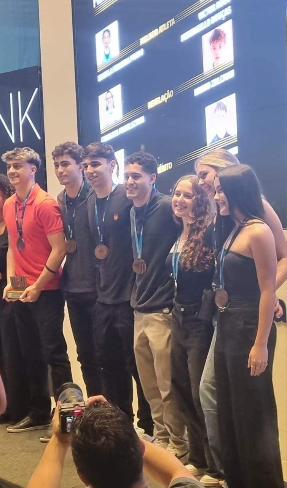

Técnico em Inteligência Artificial formado na FECAP, atualmente estou em um estágio que conquistei devido ao meu PTI que realizei para que eu fosse aprovado e conseguisse o certificado de conclusão. Realizamos a criação de uma Startup em um grupo de 4 Pessoas a Synapta Invest, uma empresa que utiliza python e Inteligência artificial para a análise de ações da Bolsa Brasileira de Ações, além da criação de uma IA que consegue recponhecer o sentimento do mercado diante de notícias e videos do youtube sobre o mercado. Algo que chamou atenção da Empresa e hoje estou fazendo parte da equipe que automatiza processos, e estamos com o maior cuidado introduzindo IA na empresa com o objetivo de melhorar os processos e alem de tornalos mais eficientes tornalos mais rápidos.
Conquistas e Algumas das minhas postagens no Linkedin
Encerrando o ano no Handebol pela Clube A Hebraica de São Paulo com o prêmio de melhor central, e fazendo parte da seleção do ano, gostaria de agradecer imensamente ao Guilherme Borin que me ajudou a construir essa carreira incrível na Hebraica. Além de tudo me despeço desse clube que joguei por dois anos ( 2023/2024 ), muito feliz por ter conseguido atingir a meta de fazer parte da equipe que trouxe de volta o Handebol na Hebraica.
A emoção de ser o melhor projeto do curso técnico de inteligência artificial da FECAP foi gigante. Foi uma dedicação imensa no ano inteiro para chegar onde nós chegamos. Gostaria de agradecer imensamente a todos que fizeram parte desse projeto. Além de tudo o que a FECAP e empresas como a Barsi Investimentos, Descarbonize Soluções, Santuu Bike Ecosystem e ao iFood que acreditaram nos projetos e investiram neles, agredeço imensamente a todas essas empresas. Recebemos uma quantia de 2000 reais no total de todas essas empresas colaboradoras do projeto Inspira Startup, como premio de melhor projeto do técnico de inteligência artificial e em nome da Synapta Invest gostaria de dizer que com esse valor estamos dando início na nossa startup, e futuramente iremos ingressar no mercado. Aguardem novidades no ano que vem!